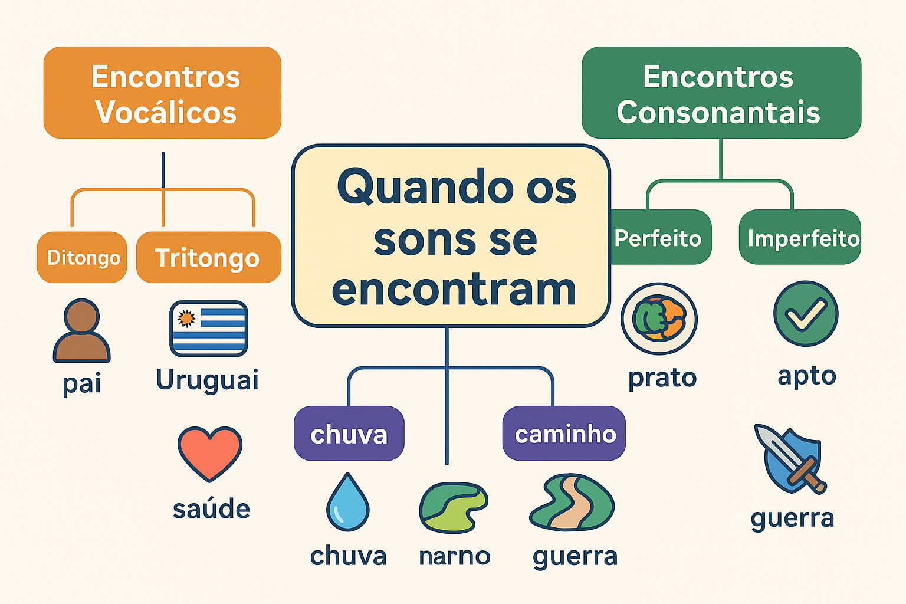

Encontros Vocálicos e Consonantais: Quando os sons se encontram
Na Língua Portuguesa, as letras se unem e produzem combinações sonoras que enriquecem a fala e a escrita. Esses encontros podem ocorrer entre vogais ou consoantes, formando estruturas que merecem atenção especial para evitar erros de leitura, escrita e pronúncia.
Encontros Vocálicos
Os encontros vocálicos acontecem quando duas ou mais vogais aparecem juntas em uma mesma palavra. Eles podem se organizar de três formas:
- Ditongo: encontro de uma vogal + semivogal (ou vice-versa) na mesma sílaba. Ex.: pai, noite, água.
- Tritongo: encontro de uma semivogal + vogal + semivogal, na mesma sílaba. Ex.: Uruguai, iguais.
- Hiato: quando duas vogais ficam juntas, mas pertencem a sílabas diferentes. Ex.: saúde, país, baú.
Encontros Consonantais
Acontecem quando duas ou mais consoantes aparecem lado a lado. Eles podem ser:
- Perfeitos: as consoantes ficam na mesma sílaba. Ex.: prato, claro.
- Imperfeitos: as consoantes ficam em sílabas diferentes. Ex.: apto, ritmo.
Dígrafos
Chamamos de dígrafos quando duas letras representam um único som. É diferente de encontro consonantal, porque nesse caso, apesar de duas letras, há apenas um fonema. Ex.: chuva (ch), guerra (rr), caminho (nh).
Sugestão de Aprendizagem
- Infográficos interativos: resumos visuais que mostram a diferença entre ditongos, hiatos e encontros consonantais.
- Exemplos do cotidiano: palavras comuns em músicas, placas e propagandas.
- Exercícios autocorretivos: quiz online para fixar o conteúdo.
Compreender os encontros vocálicos e consonantais é essencial para dominar a ortografia e a pronúncia do português. Que tal testar seus conhecimentos agora mesmo?